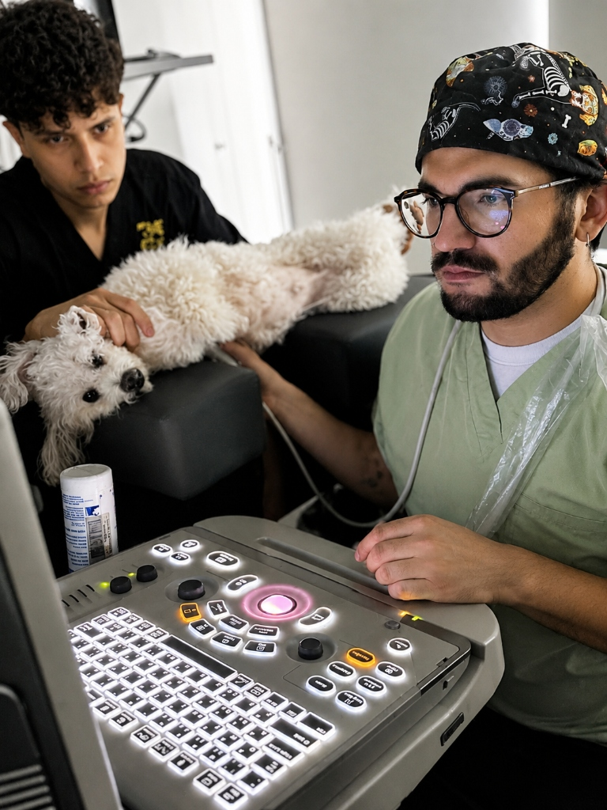
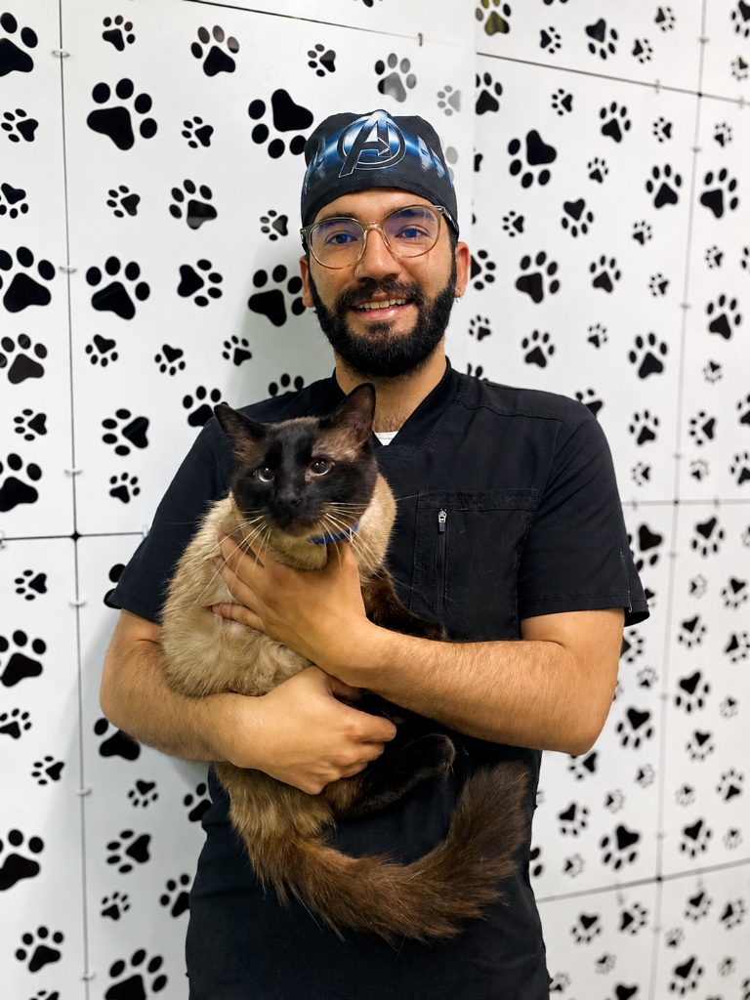
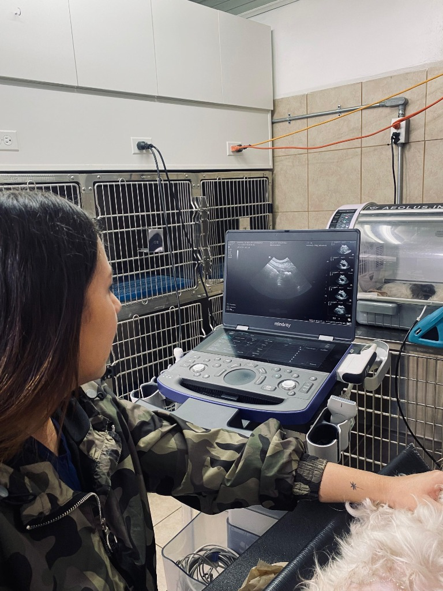
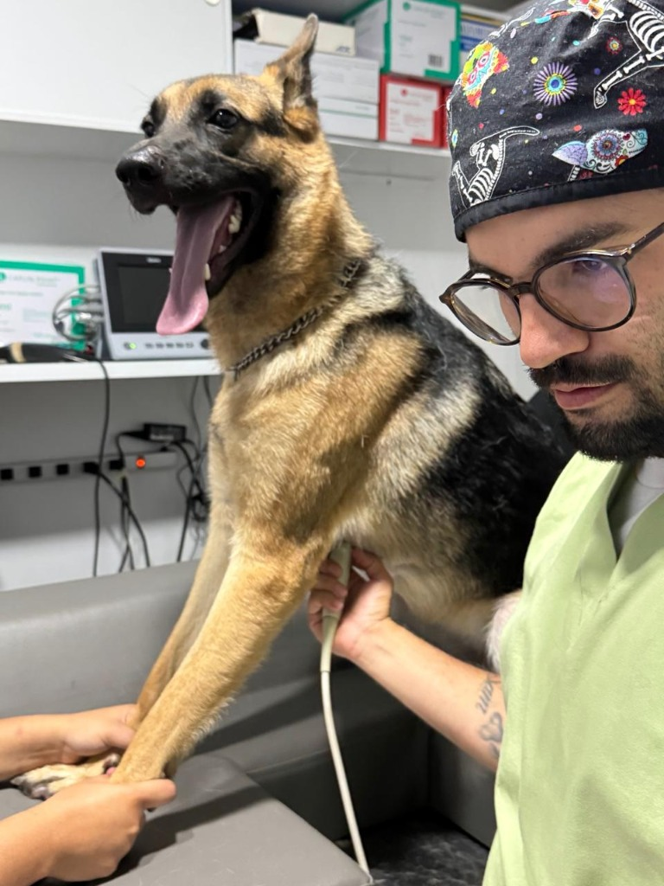
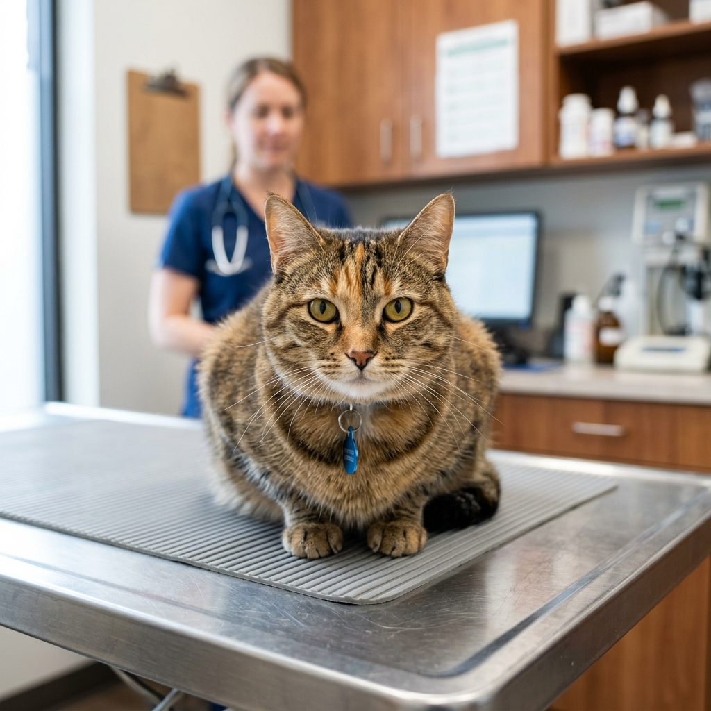
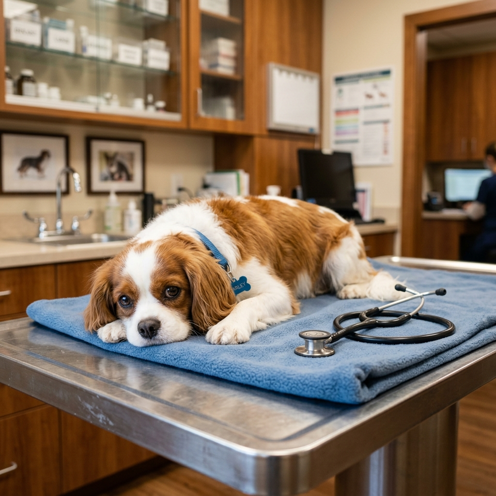

Cardiología Veterinaria
Especialistas en cardiología veterinaria para perros y gatos a domicilio y para clínicas. El mejor cardiólogo veterinario con ecocardiografía Doppler veterinaria y electrocardiograma veterinario.
Veterinario cardiólogo especialista — diagnóstico preciso con ecocardiograma Doppler, electrocardiograma y holter para perros, gatos, caballos y animales exóticos. Atención a domicilio y en clínica en Bogotá, Colombia.


Entiendo que recibir un diagnóstico cardíaco para tu mascota o animal a cargo puede ser abrumador. Como Médico Veterinario especializado en Cardiología, mi misión es brindarte claridad, tranquilidad y el tratamiento más avanzado en Colombia.
Con años de experiencia y equipos portátiles de vanguardia, trabajamos juntos para el cuidado cardiovascular de perros, gatos, caballos (grandes especies) y especies exóticas.
Egresada de la U.D.C.A., con experiencia clínica internacional en Costa Rica, Honduras y República Dominicana. Actualmente administradora y médica veterinaria de Andamedivet, especializada en ecografía diagnóstica e imagenología veterinaria.
"Precisión diagnóstica en cada latido."Ver Perfil Completo

Ofrecemos una atención cardiológica y general completa para la salud y bienestar de tu mejor amigo, directo en tu hogar o clínica.
Especialistas en cardiología veterinaria para perros y gatos a domicilio y para clínicas. El mejor cardiólogo veterinario con ecocardiografía Doppler veterinaria y electrocardiograma veterinario.
Médico veterinario a domicilio en Bogotá. Consulta veterinaria para perros y gatos, vacunación veterinaria en casa y desparasitación para perros y gatos con altos estándares de calidad.
Laboratorio veterinario a domicilio, toma de muestras en casa (incluyendo toma de muestras de sangre veterinaria) y protocolos de hospitalización veterinaria en casa.
Imagenología veterinaria y ecografía veterinaria a domicilio. También proveemos servicios veterinarios para colegas apoyando a otras clínicas en sus diagnósticos especializados.

Estamos aquí para cuidar lo más importante: su corazón y su bienestar. Atención garantizada en Bogotá.
Infórmate con nuestros recursos especializados sobre salud animal en Colombia.

Descubre por qué los desmayos son la alerta principal de arritmias y cómo el monitoreo de 24 horas puede salvar su vida en Colombia.
Leer Artículo
La ceguera repentina y el daño renal y cardíaco están ligados a la presión arterial alta en gatos geriátricos.
Leer Artículo
Conoce por qué los exámenes de sangre no son suficientes antes de someter a tu mascota a anestesia general.
Leer ArtículoLa confianza de las familias que nos eligen en toda Colombia es nuestro mayor logro.
"Llegamos asustados porque a Toby le detectaron un soplo. El Dr. Daniel fue increíblemente empático. Le hizo el ecocardiograma y nos explicó todo con paciencia. Toby ahora está en tratamiento y volvió a ser el perrito juguetón de siempre."
"Nuestra gata Luna empezó a respirar muy rápido. Fuimos por urgencia y gracias al diagnóstico rápido y certero de la clínica, lograron estabilizarla. Las instalaciones son de primer nivel y la calidad humana es excepcional. ¡100% recomendados!"
No es estrictamente obligatorio, pero es ideal. Si tienes una remisión, trabajaremos en conjunto con tu veterinario de cabecera en Bogotá o cualquier parte de Colombia enviándole el informe detallado.
Absolutamente no. Es un procedimiento de ultrasonido no invasivo, indoloro y seguro. Tu mascota estará relajada y en compañía tuya durante todo el examen.
Los signos más comunes incluyen tos frecuente (especialmente de noche o al hacer ejercicio), dificultad para respirar, cansancio rápido, desmayos (síncopes) o debilidad. Si notas esto, es vital un ecocardiograma veterinario.
Sí, ofrecemos atención y diagnóstico cardiológico a domicilio en Bogotá. Contamos con equipos portátiles de ecocardiografía y electrocardiograma para evaluar a tu mascota sin necesidad de moverla, reduciendo su estrés.